광양자 샘플링과 생성형 AI: 출발 분포는 분자 설계를 바꾸는가
광자 간섭으로 만든 숫자 묶음이 고전 생성 모델에 들어갈 때 생기는 변화—분자 생성의 품질 개선, 고전 기준선의 반격, 단백질 설계로 넘어가기 위한 조건
TECH REVIEW · 2026년 10월 23일 · 양자광학·생성 모델·분자 설계

내용 살펴보기
1. 분자 생성 AI는 왜 무작위 숫자로 시작할까
새로운 분자를 제안하는 인공지능에게 맨 먼저 무작위 숫자 한 묶음을 건넨다고 생각해 보자. 원자도 결합도 보이지 않는 숫자들이 학습된 신경망을 통과하면, 원자 종류와 연결 관계를 갖춘 분자 후보가 된다. 생성 모델은 이렇게 뜻없어 보이는 출발점에 데이터에서 배운 구조를 입힌다. 그렇다면 더 좋은 후보를 얻기 위한 연구는 숫자를 뽑는 방식에서도 시작될 수 있지 않을까.
주사위를 던진다는 비유가 어울리지만, 여기서 살펴볼 것은 숫자 하나의 예측 불가능성보다 여러 숫자가 함께 나타나는 규칙이다. 어떤 조합은 자주 나오고 다른 조합은 드물게 나오는, 무작위 속의 구조가 있다. 생성 모델은 학습하는 동안 그 구조를 반복해서 만난다. 출발점의 분포가 달라지면, 같은 크기의 신경망도 서로 다른 변환을 배우게 될 수 있다.
ORCA Computing 연구진은 이 출발점을 광자 간섭으로 만들어 보았다. 광자들이 광학 회로를 지나 어느 출력에서 몇 개 검출되는지를 숫자 묶음으로 바꾸고, 이를 고전 신경망의 입력으로 사용한다. 빛이 만드는 공동의 확률 규칙을 분자 생성의 자원으로 쓰겠다는 발상이다. [2]
이 연구에는 양자 분포가 앞선 결과와 고전 학습 조건을 바꾸자 격차가 줄거나 사라진 결과가 함께 있다. 현재의 답은 조건부다. 광양자 잠재분포는 일부 생성 모델의 품질을 개선했지만, 그 효과는 데이터·모델·학습 조건에 의존한다. 단백질 설계의 실용적 양자우위까지 입증된 것은 아니다. [2,10–12]
이 글의 출발점인 Mervin Praison의 포스트와 연결 기사는 Richard Murray의 강연을 정리한 자료다. AI로 양자 장치를 개선하는 방향과 양자 계산을 AI에 넣는 방향을 함께 다룬다. 여기서는 후자에 초점을 맞추고, ICML 2026 논문과 공개 코드, 그 뒤의 단백질 설계 발표를 서로 구별해 읽는다. [1–3]
2. 출발점이 생성 결과에 남는 이유
원자와 결합을 조합해 만들 수 있는 후보 가운데, 화학적으로 타당한 분자가 차지하는 부분은 좁다. 원자들을 임의로 연결하면 원자가 규칙을 어기거나, 학습 데이터의 화학적 특징에서 크게 벗어나는 후보가 생긴다. 생성 모델이 배워야 하는 일은 이런 공간에서 분자다운 후보가 모여 있는 곳을 찾아 표본을 제안하는 것이다. 이 글에서 다루는 분자 생성기는 원자와 결합을 그래프로 출력한다. 단백질의 3차원 골격을 만드는 문제는 뒤에서 별도로 다룬다. [7,8]
생성적 적대 신경망(GAN)은 생성기와 판별기를 함께 학습하는 방법이다. 생성기는 후보를 만들고, 판별기는 훈련 데이터와 생성 결과의 차이를 학습한다. 생성기는 그 차이를 줄이도록 갱신된다. 입력 숫자 묶음은 잠재변수(latent variable), 그 숫자 묶음을 뽑는 확률법칙은 잠재분포(latent distribution)라고 부른다. 흔히 단순한 가우시안 분포에서 시작하지만, 출발 분포를 반드시 하나로 고정할 이유는 없다. [4]
이를 짧게 쓰면 다음과 같다.
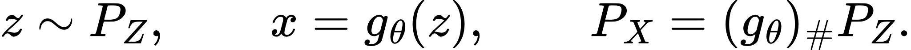
 는 입력 숫자 벡터,
는 입력 숫자 벡터,
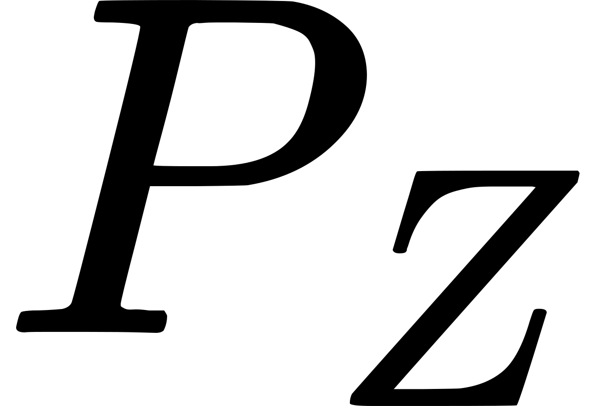
는 출발 분포,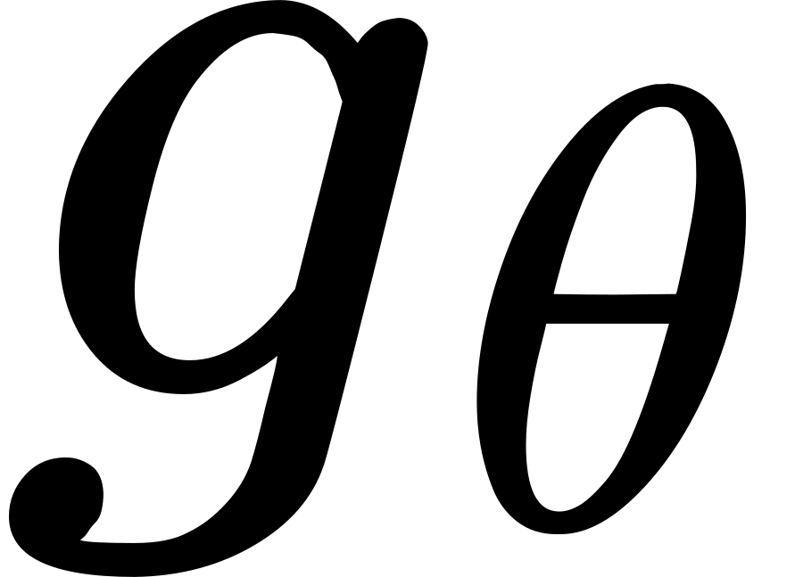
는 학습한 매개변수 를 가진 생성기다.
를 가진 생성기다.  는 생성 결과다. 마지막 표기는 출발점들을 생성기에 통과시켜 얻는 출력 분포를 뜻한다. 같은 출발점도 학습된 생성기에 따라 다른 곳으로 가며, 같은 종류의 생성기도 어떤 출발점을 얼마나 자주 만났는지에 따라 다른 매개변수를 배운다.
는 생성 결과다. 마지막 표기는 출발점들을 생성기에 통과시켜 얻는 출력 분포를 뜻한다. 같은 출발점도 학습된 생성기에 따라 다른 곳으로 가며, 같은 종류의 생성기도 어떤 출발점을 얼마나 자주 만났는지에 따라 다른 매개변수를 배운다.
지도를 고무판에 그려 늘이는 모습을 떠올려도 좋다. 출발점이 한 덩어리에 몰려 있을 때와 여러 무리로 나뉘어 있을 때, 목표 지도의 여러 섬에 점들을 보내기 위해 필요한 변형은 달라진다. 다만 신경망이 실제 고무판이라는 뜻은 아니며, 가우시안 입력이 여러 무리의 데이터를 원리적으로 생성하지 못한다는 주장도 아니다. 중요한 것은 허용한 모델의 크기와 변환 능력, 학습 시간 안에서 무엇을 쉽게 배울 수 있느냐다.
아래 도표는 양자 장치가 맡는 일을 좁혀 보여 준다. 광학 장치가 공급하는 것은 표본이고, 분자 후보를 만드는 변환과 학습은 고전 계산이 맡는다. 비교 실험에서는 출발 분포별로 같은 구조의 모델을 각각 학습한다. 학습을 마친 하나의 모델에 입력만 바꿔 끼운 실험과는 구분해야 한다. [2]
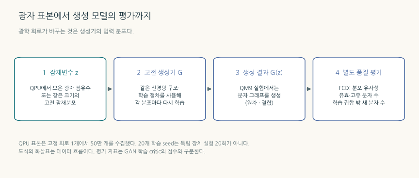
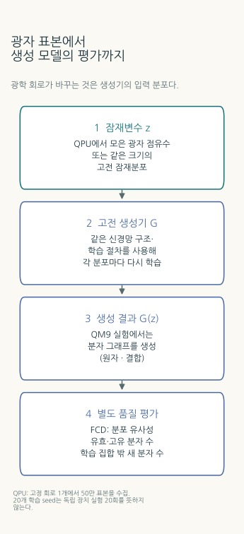
3. 광자 두 개가 보여 주는 다른 확률 규칙
광자가 만드는 표본에는 무엇이 특별할까. 가장 작은 예로, 빛을 반씩 나누는 이상적인 50:50 빔스플리터의 두 입력에 광자 하나씩을 넣어 보자. 두 광자를 서로 구별할 수 있으면, 각각의 이동을 독립적으로 세어 한 출력씩 나뉘는 경우가 절반, 두 광자가 같은 쪽으로 나오는 두 경우가 각각 4분의 1이다.
두 광자가 시간·편광·스펙트럼 등에서 완전히 구별되지 않고 함께 들어오면 확률이 달라진다. 두 출력에 하나씩 나오는 과정의 확률진폭이 상쇄돼, 두 광자가 같은 쪽으로 모이는 두 경우만 각각 절반씩 남는다. 이것이 Hong–Ou–Mandel 간섭의 이상적인 모습이다. 광자들이 작은 공처럼 서로 밀어냈다고 설명할 현상이 아니다. 구별되지 않는 여러 가능성을 확률진폭으로 합친 뒤 그 크기를 제곱해야 한다. [5]
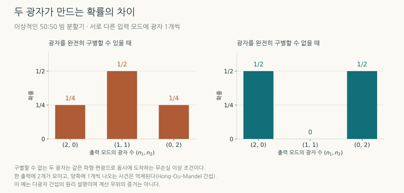
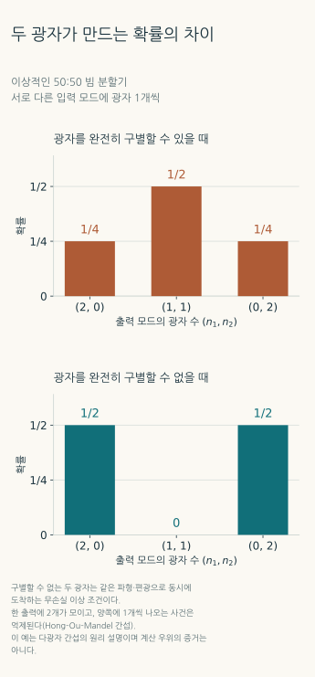
출력 포트가 많아지면 숫자 묶음은 각 포트의 광자수를 기록한 점유수 벡터가 된다. 이상적인 선형 광학계에서 동일한 광자들의 출력 확률을 계산할 때에는, 여러 경로의 진폭을 더하는 퍼머넌트(permanent)라는 행렬함수가 등장한다. 보손 샘플링(boson sampling)의 계산복잡성 연구는 이런 확률분포를 고전 컴퓨터로 근사해 뽑는 일이 언제 어려운지를 묻는다. 그 난해성 주장은 회로 종류와 오차, 광자 손실, 계산복잡성의 가정에 달려 있다. 특정한 작은 회로를 고전적으로 계산할 수 없다는 보증으로 읽어서는 안 된다. [2,6]
생성 모델에 필요한 것도 이런 공동분포의 표본이다. 출발 벡터의 성분들이 함께 변하는 규칙이 달라지면 생성기가 만나는 입력의 구조가 달라진다. 그래서 비교에는 가우시안 분포뿐 아니라, 같은 광학 회로에서 광자들을 구별 가능하게 만든 분포도 중요하다. 후자는 광학 경로의 조건을 남겨 두면서 다광자 간섭의 효과를 가려 보는 대조군이다. [2]
4. 복잡한 출발점이 복잡한 출력으로 남을 조건
양자 분포를 입력했다고 해서 그 성질이 출력에 반드시 남는 것은 아니다. 모든 입력을 똑같은 숫자로 보내는 생성기를 생각하면 곧 이해할 수 있다. 입력의 복잡한 구조가 변환 과정에서 모두 지워진다. 따라서 이론은 어떤 생성기가 출발점의 정보를 보존하는지부터 따져야 한다.
ICML 논문은 효율적으로 계산되는 생성기와 그 역함수에 조건을 둔다. 출력에서 출발점을 효율적으로 복원할 수 있고, 작은 출력 오차가 역변환에서 통제할 수 없을 만큼 증폭되지 않는다는 Lipschitz 조건 등이 필요하다. 이론은 양자적으로 효율적인 표본화가 가능하면서, 고전적으로는 효율적인 근사 표본화가 불가능하다고 가정한 분포 계열에서 출발한다. 역함수의 Lipschitz 상수도 문제 크기에 걸쳐 공통으로 제어되어야 한다. 이런 조건 아래에서는 출력을 고전적으로 쉽게 표본화할 수 있다면 역변환으로 원래 양자 분포도 쉽게 표본화할 수 있다는 논증이 가능하다. [2, §3·부록 A]
여기서 다루는 것은 문제가 커질 때의 분포·생성기 계열과 근사 오차다. 한 번의 유한한 광자 실험에 곧바로 대입하는 판정식이 아니다. 이 정리는 출력 분포의 계산적 표현 가능성에 관한 조건부 결과이며, 신경망 학습이 성공한다는 보장이나 QM9에서 좋은 분자가 더 많이 나온다는 명제를 직접 주지는 않는다. QM9가 그 자체로 고전적으로 표본화하기 어려운 양자 분포에 속한다는 증명도 아니다.
그럼에도 이론은 실험에서 무엇을 찾아야 하는지 알려 준다. 용량이 제한된 생성기가 단순한 출발 분포를 목표 데이터의 구조로 바꾸기 어려울 때, 그 구조와 잘 맞는 다른 출발 분포가 도움이 될 수 있다. 논문은 이를 귀납적 편향(inductive bias)의 관점에서도 설명한다. 학습을 어떤 패턴 쪽으로 이끄는 입력의 성질이라는 뜻이다. 유용한 상관관계는 고전 분포에도 있을 수 있으므로, 좋은 고전 대조군과 충분한 조정이 다음 질문이 된다. [2]
5. 실제 분자 생성에서는 무엇이 늘었는가
QM9는 수소를 제외한 원자 수가 최대 아홉 개인 작은 유기분자들을 담은 데이터셋이다. 연구진은 MolGAN을 수정한 고전 생성기에 서로 다른 잠재분포를 넣고, 1만 번의 생성 시도에서 얻은 분자 그래프를 평가했다. 원자를 연결하는 형식적 화학 검사를 통과했는지, 중복을 없앤 뒤 몇 개가 남는지, 훈련 집합에 없는 후보가 몇 개인지 등을 구분한다. 이 검사만으로 실제 합성 가능성·안정성·약효가 확인되지는 않는다. [2,7,8]
분자 무리의 전체적인 성질에는 Fréchet ChemNet Distance(FCD)도 사용했다. 분자들을 ChemNet 신경망의 특징 공간으로 옮기고 생성 집합과 기준 집합의 통계 차이를 비교하는 거리이며, 낮을수록 더 가깝다. 유효한 후보 수와 FCD는 서로 다른 질문에 답한다. 전자는 남는 후보의 수를, 후자는 후보 집합이 기준 분자들의 특징 분포와 얼마나 비슷한지를 본다. [9]
물리적 PT-2 장치를 사용한 논문 표 4에서는 유효하고 서로 다른 분자 그래프가 평균 1,962±75개였다. 가우시안 입력에서는 1,320±53개, 구별 가능한 광자의 대조 분포에서는 1,638±102개였다. ±는 20개 훈련 시드에 대한 평균의 표준오차다. 같은 장치 회로를 20번 독립적으로 새로 구현했다는 뜻은 아니다. 이 실험의 하드웨어 출발 분포는 한 고정된 광학 회로에서 모은 표본을 재사용했다. [2, 표 4·부록 E]
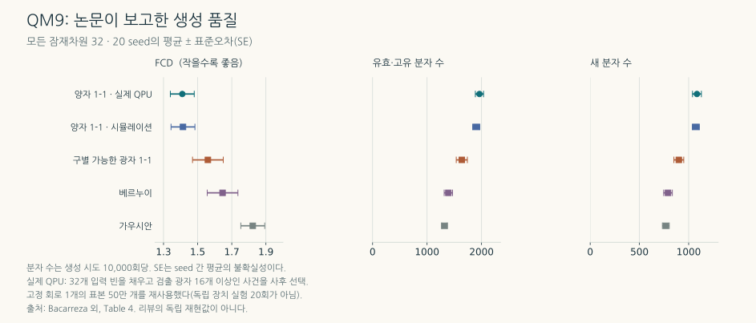
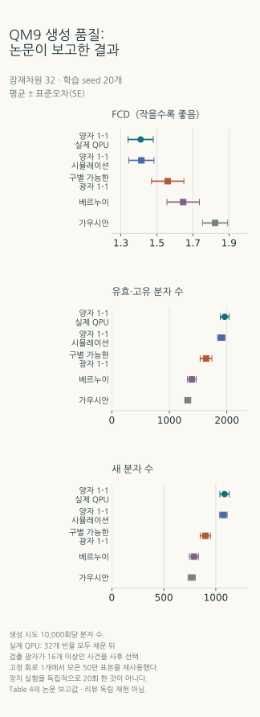
가우시안 대비 증가율을 직접 계산하면 약 48.6%다. 생성 시도 전체를 분모로 쓰면 비율은 13.20%에서 19.62%로 늘어 6.42%포인트 차이다. 같은 광학계의 구별 가능한 광자 대조군에 대한 상대 증가는 약 19.8%다. ‘49% 개선’이라는 숫자에 어느 비교군을 붙이는지가 중요한 이유다. 이 비율 계산은 표의 평균값으로 한 산술이며, 시드별 쌍을 이룬 데이터 없이 증가율의 신뢰구간을 새로 추정하지 않았다.
FCD도 PT-2에서 1.410±0.07, 가우시안에서 1.823±0.07로 보고됐다. 그러나 다른 차원·회로를 쓴 표들까지 합쳐 양자 분포가 모든 지표에서 항상 최고였다고 말할 수는 없다. 같은 논문의 고전 모사 비교에서도 일부 차원의 FCD는 다른 고전 분포가 수치상 더 낮았다. 이 결과가 보여 주는 것은 선택한 설정에서의 생성 품질 변화다. [2, 표 2·4]
6. 고전 기준선을 조정하자 생긴 일
앞의 차이를 평가하려면 같은 논문의 잘되지 않은 실험도 읽어야 한다. 부록 H에서는 학습률·데이터 순열 증강 확률·학습 단계 수를 바꾼 QM9 설정에서 방법 간 차이가 통계적으로 유의하지 않았다고 보고한다. 이 설정은 실제 PT-2 표 4와 회로·학습 조건이 다르므로, 앞의 두 행을 그대로 교체한 재시험처럼 다뤄서는 안 된다. 그럼에도 출발 분포의 효과와 학습법의 효과를 함께 살펴야 한다는 직접적인 근거다. [2, 부록 H]
이미지 생성에서도 양자 분포가 항상 이득을 주지는 않았다. StyleGAN의 CIFAR-10 실험에서는 개선이 나타나지 않았고, 확산 기반 GAN 실험도 여러 분포를 넣을 수 있다는 가능성은 보였으나 뚜렷한 성능 우위를 보고하지 않았다. 가우시안 분포를 쓰는 고전 모델이 적절한 구조와 학습법으로 어려움을 해결할 수 있다면, 다른 장치를 더하는 이유도 다시 따져야 한다. [2]
계산복잡성과 응용 품질 사이에는 이처럼 실험으로 건너야 할 간격이 있다. 어떤 분포의 모든 세부를 정확히 흉내 내기 어려워도, 생성기가 실제로 사용하는 통계만 고전적으로 근사해 비슷한 품질을 얻을 가능성은 남는다. 학습 가능한 고전 prior, 정규화 흐름(normalizing flow), 잡음을 고려한 광자 모사 등과의 비교가 필요한 까닭이다. 이 논문의 비교를 가능한 모든 고전 모델의 최종 성능으로 읽어서는 안 된다. [2, §5]
7. 작은 고전 실행으로 본 출발 분포의 효과
리뷰에서는 공개 코드의 고정 버전을 읽고, 일곱 개의 작은 점 무리를 생성하는 예제를 CPU에서 제한적으로 실행했다. 출발 분포는 가우시안, 구별 가능한 광자 대조, 동일 광자 통계의 고전 모사 세 가지다. 광학 모사는 8개 입력 광자와 16개 시간 빈을 쓰는 단일 루프다. 논문 Figure 1의 1–3–9 다중 루프와 다르므로, 그 그림이나 분자 실험을 재현했다고 부르지 않는다. [3,14]
같은 구조의 WGAN-GP를 각각 5,000단계 학습했다. 생성기는 16차원 입력을 두 개의 256뉴런 은닉층을 거쳐 평면의 점으로 바꾼다. 한 훈련 시드 20261023, 배치 32, 학습률 0.0005를 사용했다. 같은 광학 변환을 독립적으로 따르는 구별 가능한 광자 대조는 별도 구현했고, 작은 두 광자 경우의 정확 열거와 유니터리 검사로 확률·광자수 조건을 확인했다. 이 모사는 고전 컴퓨터로 실행 가능한 크기다.
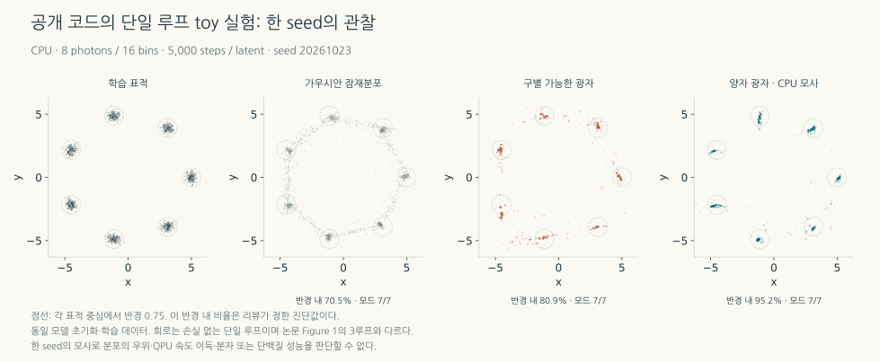
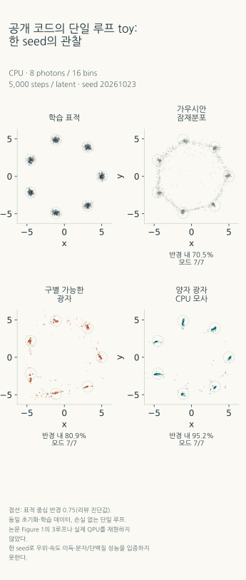
그림에서는 일곱 점 무리 사이의 빈 영역에 얼마나 많은 생성점이 남는지 보자. 이 한 실행에서는 세 모델 모두 일곱 위치를 찾았지만, 그 사이에 흩어지는 점의 양이 달랐다. 각 중심에서 거리 0.75 이내인 점의 비율을 리뷰의 진단값으로 정했을 때, 평가점 1만 개 중 가우시안은 70.50%, 구별 가능한 광자는 80.87%, 동일 광자 모사는 95.20%였다. 좌표는 이 합성 데이터의 무차원 값이며, 이 진단은 논문의 분자 지표가 아니다.
이 한 장면은 같은 종류의 생성기가 다른 출발 분포를 만나면 다르게 학습될 수 있음을 눈으로 보여 준다. 여러 훈련 시드와 회로, 학습 시간, 더 강한 고전 prior를 비교하지 않았으므로 일반적인 순위는 정하지 못한다. 논문 자체에서도 학습을 더 오래 하면 작은 예제의 격차가 줄어드는 경우가 있었다. 이 결과를 유리한 장면만 남긴 양자우위의 증거로 사용하면, 앞 절에서 확인한 교훈을 놓치게 된다.
8. 단백질을 만들었다는 발표를 읽는 법
소분자 그래프에서 단백질로 옮겨 가면 생성 대상과 평가법이 바뀐다. NVIDIA의 원 Proteína는 단백질의 Cα 원자 골격 좌표를 생성하는 flow-matching 모델이다. 무작위 좌표에서 학습된 흐름을 따라 단백질다운 골격을 제안한다. 단백질 서열을 받아 기존 구조를 예측하는 일과, 새로운 구조 후보를 만드는 일을 구분해야 한다. [10]
2026년 10월 ORCA는 PT-3와 NVIDIA Hopper GPU 32대를 사용한 Proteína 확장판을 발표했다. 장치 자원은 광자 64개·광학 모드 128개로 소개했고, 유용한 단백질의 비율을 20% 개선했으며 이차구조의 구성이 달라졌다고 보고했다. NVIDIA도 이 결과를 ORCA의 보고로 소개한다. 이 자원 수를 오류정정된 논리 큐비트 수로 바꾸어 읽어서는 안 된다. [11,12]
이 발표를 이해하는 배경으로 원 Proteína의 평가법을 살펴보자. 아래 절차를 PT-3 확장판에도 그대로 적용했는지는 공개 자료로 확인되지 않는다. 해석의 핵심은 designability가 무엇을 측정했는지다. 원 Proteína 논문은 생성 골격마다 ProteinMPNN으로 서열 여덟 개를 제안하고 ESMFold로 다시 접어 본다. 그중 가장 잘 맞는 구조의 자기일관성 RMSD(scRMSD)가 2 Å보다 작으면 기준을 통과한 골격으로 센다. Å는 0.1 nm이며, scRMSD는 생성 골격과 다시 예측한 골격의 대응하는 Cα 원자들을 최적으로 회전·평행이동해 정렬한 뒤, 위치 차이의 제곱평균제곱근을 구한 양이다. 계산상 서로 잘 맞는 서열·구조를 얻었다는 뜻으로, 실제 합성·안정성·결합력·치료 효능은 각각 다음 실험의 질문이다. [10, 부록 F]
PT-3 발표가 원 논문의 이 평가 절차를 그대로 썼는지, 20%의 기준값과 분모가 무엇인지, 같은 계산량의 고전 기준선과 어떻게 비교했는지는 공개 발표만으로 확인되지 않는다. 이번 검색에서는 해당 확장판의 대응 논문·코드·시드별 결과를 확인하지 못했다. 따라서 원 모델의 지표 설명을 PT-3 결과의 상세 평가가 확인됐다는 뜻으로 옮기지 않는다. 이차구조의 구성 변화만으로 다양성·신규성이 모두 좋아졌다고 결론내릴 수도 없다.
다른 연구의 실험실 결과를 가져와 빈칸을 메우는 것도 피해야 한다. 별도의 PT-2 연구는 MHC에 결합하는 펩타이드의 서열을 생성하고, 선별한 후보가 펩타이드–MHC 복합체를 안정화하는지 ELISA로 평가했다. 이는 Proteína 골격 생성과 연구 대상·모델·검사 단계가 다르다. QM9의 계산상 후보, 펩타이드의 별도 실험, PT-3 단백질 발표는 각각의 조건 아래에서 읽어야 한다. [13]
| 연구 | 생성·평가 대상 | 현재 이 글에서 확인한 근거 |
|---|---|---|
| ICML·PT-2 QM9 | 작은 분자의 그래프, 유효·고유·훈련집합 밖 후보와 FCD | 동료평가 논문과 표, 장치 표본·고전 모사·고전 대조 비교 |
| PT-2 펩타이드 | MHC 결합 펩타이드 서열, 별도 복합체 안정화 검사 | 별개 프리프린트와 코드. Proteína 결과와 합치지 않음 |
| PT-3 Proteína 확장 | 단백질 골격 생성·designability 개선 주장 | 공급자와 협력사의 발표. 해당 확장판의 상세 평가·재현 자료는 이번 조사에서 미확인 |
9. 좋은 후보의 수와 전체 계산 비용을 함께 본다
품질을 높인 출발 분포가 실용적인 도구가 되려면 표본을 얻는 비용도 감당할 수 있어야 한다. 실제 PT-2 연구는 32개 입력 시간 빈을 채우고, 검출 광자 수가 16개보다 적은 시행을 버리는 후선택을 사용했다. 연구진은 이 방식이 대략 16광자·32채널의 무작위 입력 위치를 모사한다고 설명한다. 따라서 매 시행에 정확히 16개를 넣고 16개를 그대로 검출한 이상적 장치로 단순화할 수 없다. [2, 부록 B]
고정 회로의 표본 50만 개를 모으는 데에는 40분이 들었다. 그 표본 풀을 여러 학습에서 재사용할 수 있으므로, 매번 40분을 더한다고 셀 수도 없고 그 수집비용을 없애 버릴 수도 없다. 고전 GPU 학습, 광학 제어와 검출, 버린 시행, 통신과 표본 저장까지 어떤 비용을 어느 횟수에 나누어 계산했는지 밝혀야 한다. [2]
모델 크기·데이터·학습 조건을 맞춘 품질 비교와, 같은 최종 품질에 도달하는 데 드는 총시간·에너지·비용 비교는 서로 다른 실험이다. 서로 다른 광자 수·모드 수의 고전 모사 시간과 장치 수집 시간을 직접 나란히 놓아 가속률을 만들면 비교 대상이 바뀐다. 이 논문의 자료만으로 AI 학습 전체의 속도 향상이나 에너지 절감을 확정할 수는 없다.
도입의 질문에는 이제 더 구체적으로 답할 수 있다. 무작위 숫자를 뽑는 규칙을 바꾸는 일은 생성 모델이 배우는 것과 제안하는 후보를 바꿀 수 있다. 광자 간섭에서 얻은 분포는 그 가능성을 시험할 새로운 출발점이며, 특정 조건의 분자 생성에서 실제 개선이 보고됐다. 동시에 고전 학습 조건을 조정하면 이득이 줄거나 사라진다는 결과도 나왔다. 단백질 설계로 그 이득을 옮기려면 무엇을 생성했고 어떤 검사에 통과했는지, 충분한 고전 비교와 전체 비용을 함께 보여 주어야 한다. 빛이 제공한 출발점의 가치는 그 과정을 끝까지 따라갔을 때 남는 차이로 판단할 수 있다.
참고문헌과 재현 자료
- Praison, M. A Quantum Computer Beside the GPUs. 2026-10-20. 강연 요약 기사. 공유 포스트의 연결 자료이며 과학적 수치의 원전과 구분했다.
- Bacarreza, O. et al. Quantum latent distributions in deep generative models. ICML 2026, PMLR 306, 4740–4760. 출판 기록, 게재 PDF, arXiv v3. §3–5·표 2/4·부록 B/E/H 대조.
- ORCA Computing. 공식 코드의 고정 버전, commit
b950127d3584561fee4aea4af566bcce697d6946. Apache-2.0. 공개 예제와 논문 회로의 차이 및 미공개 재현 범위를 확인했다. - Goodfellow, I. et al. Generative Adversarial Nets. NeurIPS 2014. 논문.
- Hong, C. K., Ou, Z. Y. & Mandel, L. Measurement of subpicosecond time intervals between two photons by interference. Physical Review Letters 59, 2044–2046 (1987). DOI.
- Aaronson, S. & Arkhipov, A. The Computational Complexity of Linear Optics. 원 논문. 보손 샘플링의 복잡성 가정과 적용 범위.
- De Cao, N. & Kipf, T. MolGAN: An implicit generative model for small molecular graphs. 2018. 논문.
- Ramakrishnan, R. et al. Quantum chemistry structures and properties of 134 kilo molecules. Scientific Data 1, 140022 (2014). DOI.
- Preuer, K. et al. Fréchet ChemNet Distance: A Metric for Generative Models for Molecules in Drug Discovery. Journal of Chemical Information and Modeling (2018). DOI, 저자 원고.
- Proteína: Scaling Flow-based Protein Structure Generative Models. 원 논문·부록 F, 공식 모델 카드, 평가 코드 고정 버전. 원 모델의 생성 대상과 평가법이며 PT-3 확장판의 공개 평가 절차와 구분했다.
- ORCA Computing. ORCA Computing launches PT-3. 2026-10-15. 공식 발표.
- NVIDIA. UK ecosystem deployment 공식 블로그, Quantum 절. Proteína 결과를 ORCA 보고로 귀속한 표현 확인.
- Engdal et al. Hybrid quantum-classical de novo design of MHC-binding peptides. 2026-07 프리프린트. DOI, 공식 코드. PT-2 펩타이드 실험으로 별도 취급했다.
- AI Tech Review. 이 리뷰의 설명 도표·제한 실행 코드와 결과. 합성 점 데이터, 원 논문 표의 재도표와 리뷰 진단값을 구분해 보존했다.